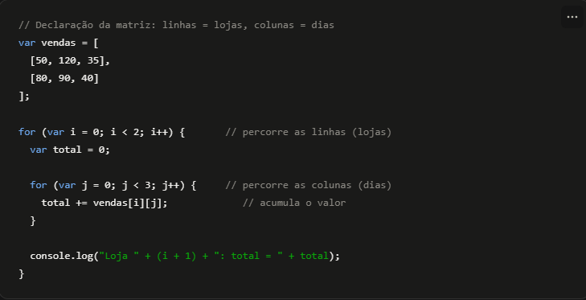
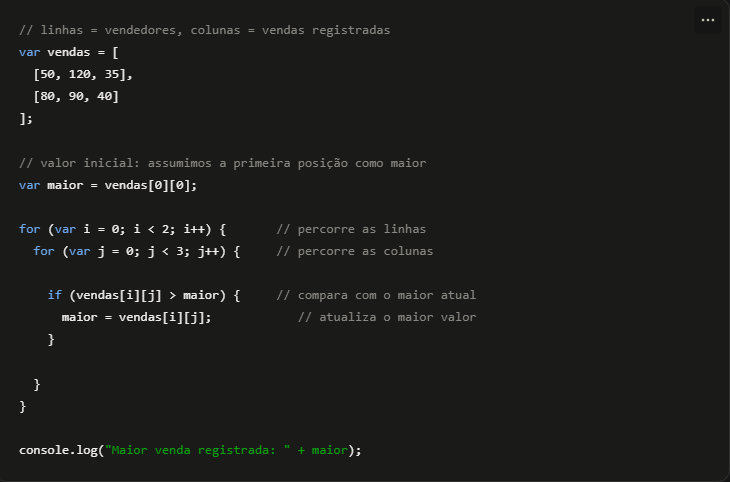

Matrizes (vetores bidimensionais) são estruturas que organizam valores em linhas e colunas, como uma tabela. Cada valor é acessado através de duas posições: o índice da linha e o índice da coluna, ambos começando em 0. Elas funcionam como um vetor de vetores: cada linha é, por si só, um vetor.
Imagine que estamos programando o sistema de vendas de uma rede de lojas. Cada linha da matriz representa uma loja, e cada coluna representa as vendas de um dia da semana.

var vendas = [[50,120,35],[80,90,40]];. Cada posição externa é uma linha (loja), e cada posição interna é uma coluna (dia).for externo para percorrer as linhas, e outro for interno para percorrer as colunas de cada linha, acessando cada valor com vendas[i][j].Imagine agora que estamos verificando o desempenho de vendedores em uma matriz e queremos descobrir qual foi a maior venda registrada.

vendas[0][0]).
function testarSomaMatriz() {
var texto = document.getElementById("vendasLojas").value;
var linhas = texto.split(";");
var vendas = [];
for (var i = 0; i < linhas.length; i++) {
vendas.push(linhas[i].split(",").map(Number));
}
var total = 0;
var mensagem = "";
for (var i = 0; i < vendas.length; i++) {
for (var j = 0; j < vendas[i].length; j++) {
total += vendas[i][j];
mensagem += "Loja " + i + ", dia " + j + ": R$ " + vendas[i][j] + "
";
}
}
mensagem += "Total geral de vendas: R$ " + total;
document.getElementById("resultadoSomaMatriz").innerHTML = mensagem;
}
Este exemplo já usa uma matriz fixa de vendas: [[50,120,35],[80,200,40]].
function testarMaiorVenda() {
var vendas = [[50, 120, 35], [80, 200, 40]];
var maior = vendas[0][0];
for (var i = 0; i < vendas.length; i++) {
for (var j = 0; j < vendas[i].length; j++) {
if (vendas[i][j] > maior) {
maior = vendas[i][j];
}
}
}
alert("A maior venda encontrada foi: R$ " + maior);
}
Uma etapa por vez: estamos juntos no processo e o resultado virá
Uma loja quer calcular a média de temperatura registrada em várias geladeiras, ao longo de vários dias. Escreva um programa em JavaScript que armazene as temperaturas em uma matriz e use dois laços for para calcular a média geral dos valores.
function testarMediaTemperaturas() {
var texto = document.getElementById("temperaturasGeladeiras").value;
var linhas = texto.split(";");
var temperaturas = [];
for (var i = 0; i < linhas.length; i++) {
temperaturas.push(linhas[i].split(",").map(Number));
}
var soma = 0;
var contador = 0;
for (var i = 0; i < temperaturas.length; i++) {
for (var j = 0; j < temperaturas[i].length; j++) {
soma += temperaturas[i][j];
contador++;
}
}
var media = soma / contador;
document.getElementById("resultadoMediaTemperaturas").innerHTML = "A média geral de temperatura é: " + media.toFixed(2) + "°C";
}
O sistema da loja precisa verificar quantas vezes um determinado produto aparece registrado em uma matriz de códigos de estoque, organizada por prateleira. Escreva um programa em JavaScript que percorra uma matriz de códigos e conte quantas vezes um código informado pelo cliente aparece.
function testarBuscaCodigoMatriz() {
var texto = document.getElementById("codigosPrateleiras").value;
var linhas = texto.split(";");
var codigos = [];
for (var i = 0; i < linhas.length; i++) {
codigos.push(linhas[i].split(",").map(Number));
}
var busca = parseInt(document.getElementById("codigoBuscaMatriz").value);
var contador = 0;
for (var i = 0; i < codigos.length; i++) {
for (var j = 0; j < codigos[i].length; j++) {
if (codigos[i][j] === busca) {
contador++;
}
}
}
var mensagem = "";
if (contador > 0) {
mensagem = "O código " + busca + " foi encontrado " + contador + " vez(es) no estoque.";
} else {
mensagem = "O código " + busca + " não foi encontrado no estoque.";
}
document.getElementById("resultadoBuscaCodigoMatriz").innerHTML = mensagem;
}